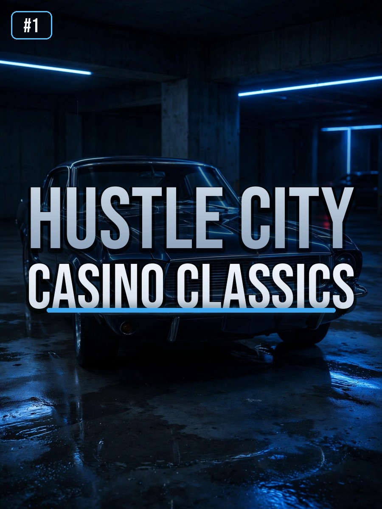
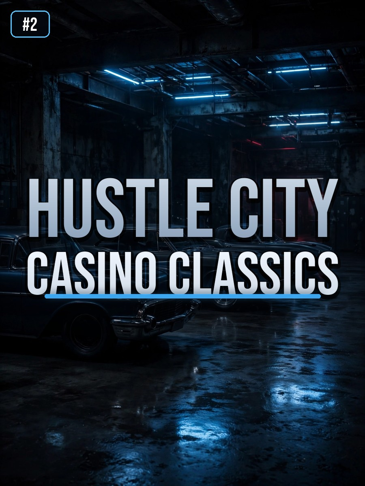
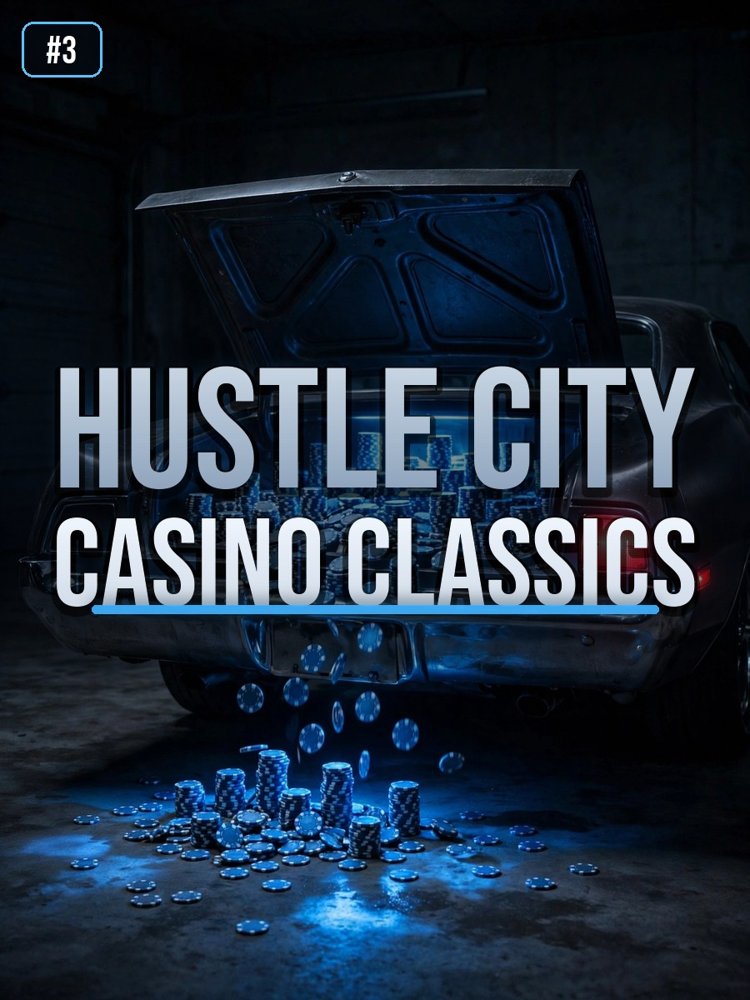
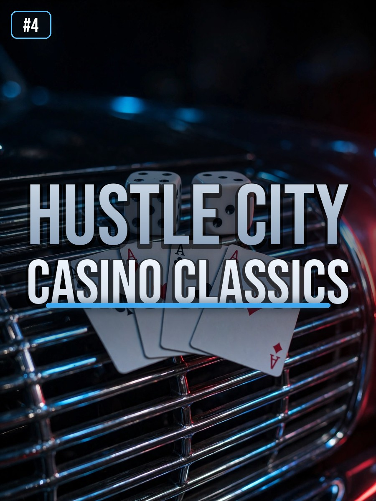
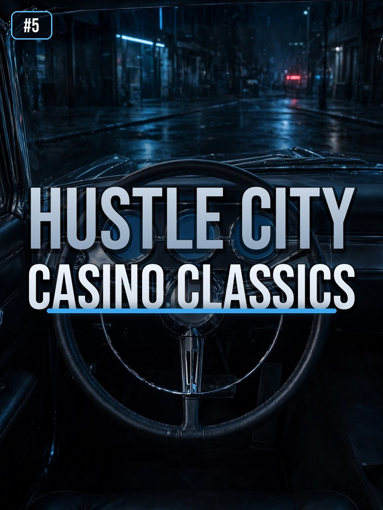
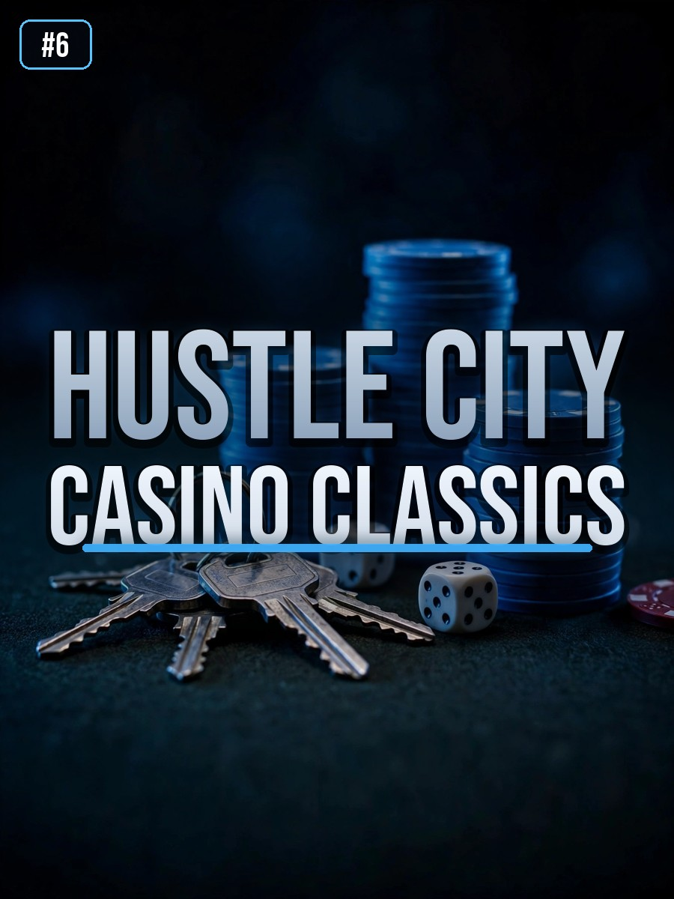
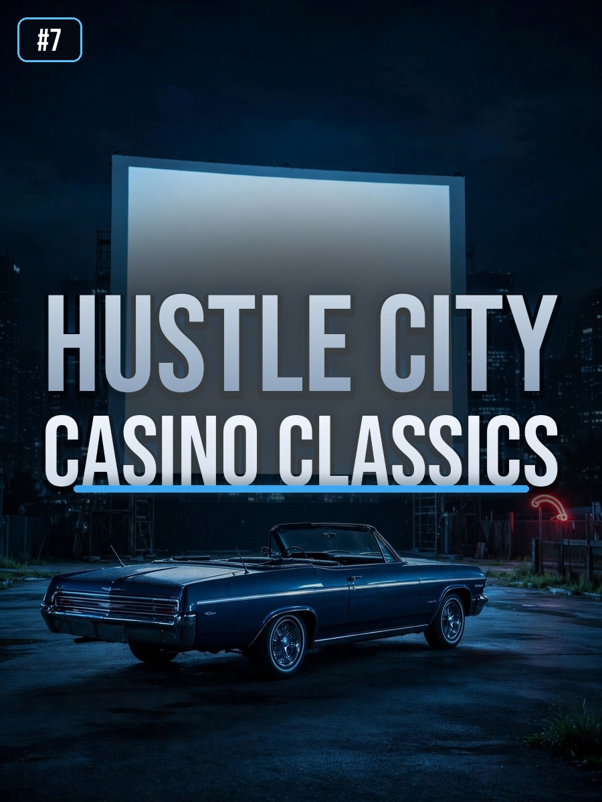
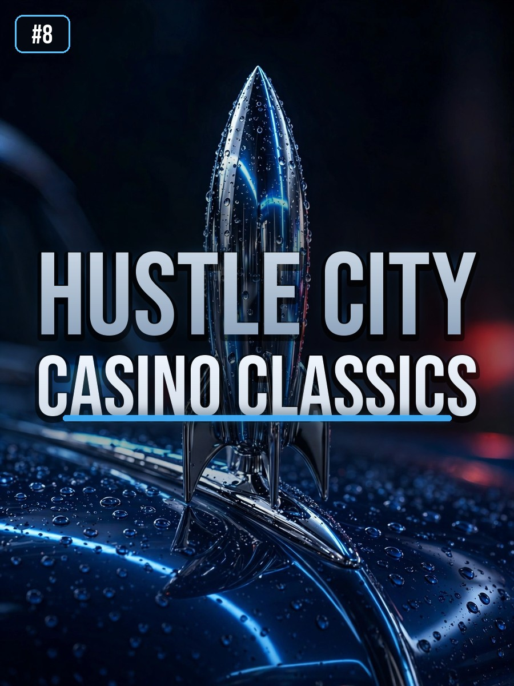
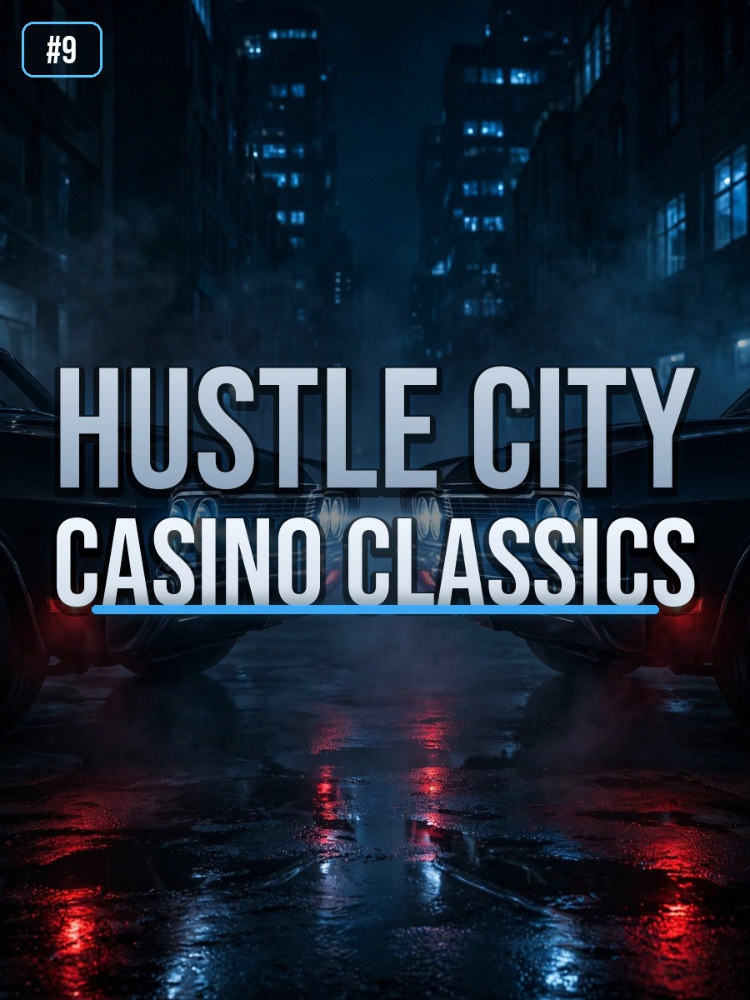
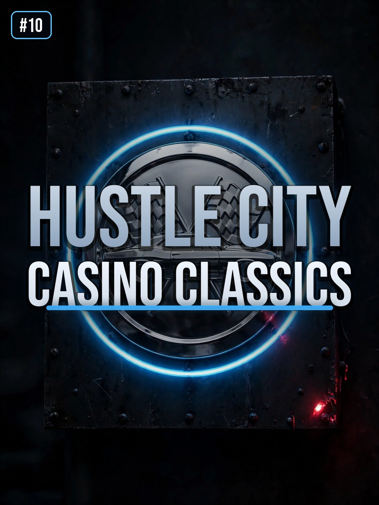

Casino Classics — Thumbnail Picks
Ten thumbnail options for Casino Classics, built 2026-11-21. Chrome + electric blue on near-black, the classic-car garage world front and center, title typeset clean over the art in the machine's own marquee treatment. Every board is portrait with the title and the hero kept in the middle band, so a landscape crop keeps both readable.
Examples only — the game's current thumbnail does NOT change until a pick is made. Pick by number.

#1Midnight Muscle Car
The hero shot: a midnight-blue sixties fastback under the garage neons, chrome grille out front.

#2The Garage Row
Three classics in a row under the blue tubes — fifties fins, muscle, and the coupe at the end of the line.

#3Trunk Full of Blue
The Pick-a-Garage money shot: trunk popped, blue chips stacked inside and spilling onto the concrete.

#4Aces on the Grille
Four aces and a pair of dice laid across a polished chrome grille, red glow at the edge.

#5Behind the Wheel
The driver's seat at night: chrome wheel, glowing blue gauges, wet street through the windshield.

#6Keys to the City
The car keys down on the felt, tall stacks of blue chips standing behind them.

#7Skyline Drive-In Night
Top down under the big blank screen, city towers lit up behind it, one red neon burning at the fence.

#8The Chrome Rocket
Macro on the rocket hood ornament, beaded with rain and lit by blue neon.

#9Face Off at Midnight
Two classics nose to nose on a wet street, headlights crossing in the haze.

#10The Classics Badge
The chrome badge on riveted steel: a muscle-car relief and crossed checkered flags ringed in blue neon.
© 2026 Joshua Dawson / J-Dawgs Industries LLC — Casino Classics™